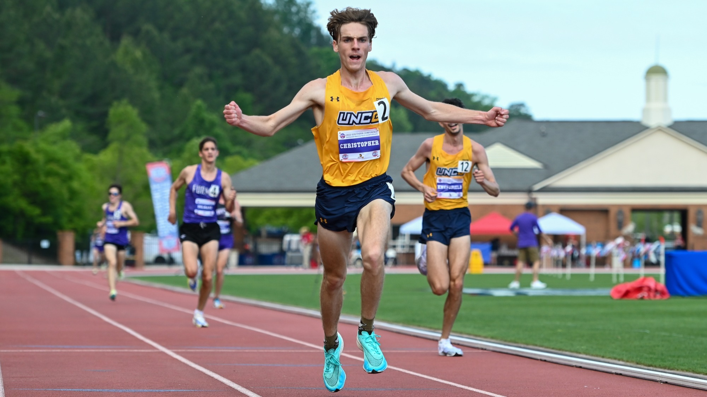
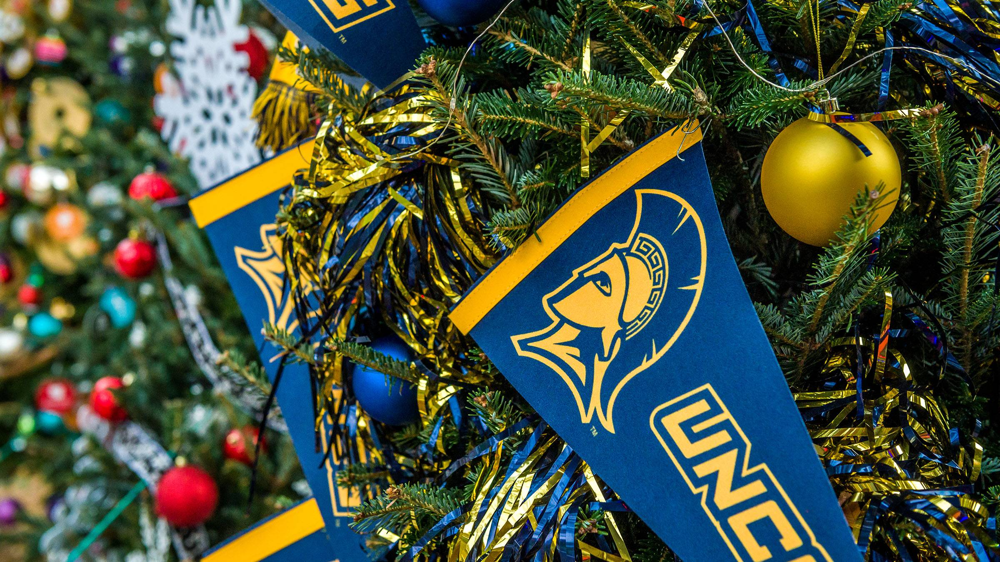

Campus Event Guide
Welcome to the Campus Event Guide! Where you can find anything you need.
Welcome to the Campus Event Guide! Where you can find anything you need.
Our university offers all sorts of on-campus events. Gather around and make sure to stay updated with our page. Use the above links to take you to information you need to know about upcoming events or our special featured event. I hope to see you there!






The Campus Event Guide was created to help students, faculty, and the greater Greensboro community stay connected to everything happening at UNCG. From lively fairs to sport holiday gatherings, our campus calendar is full of opportunities to get involved, meet new people, and make the most of your time as a Spartan. We're committed to keeping this page updated with accurate dates, times, and locations of upcoming events so you can plan ahead with confidence. Have an event you think belongs here? Reach out and let us know! GO SPARTANS!